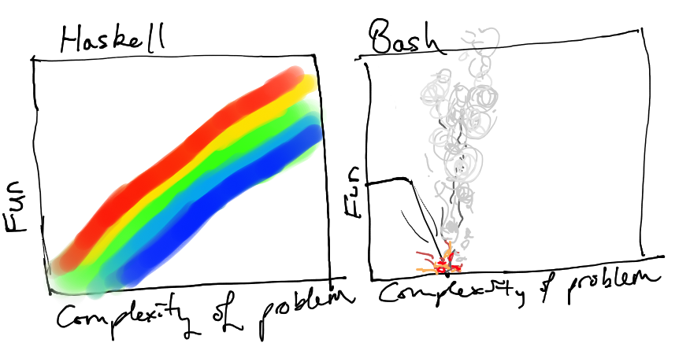

Warning: this code is horribly broken outside of use in Zsh.
As such, all occurences of “sh” are referring to POSIX shells ie bash and /bin/sh, (which is usually symlinked to bash, minus some bash-only features).
I find myself trying to do things I can do in GHCi more each passing day in my innocent /bin/sh. I find myself seeking a good balance between the numerous layers of hacks that compose shell script and the purely functional wonder of a Haskell program. Such efforts already exist, most recently in Shelly.hs, but I believe this to be tackling the problem from the wrong end. Instead of hacking together a library to make Haskell code reminiscent of the beloved /bin/sh, the problem should be tackled with extreme prejudice by hacking together a sh script to mimic the best of Haskell, and retain the beauty of shell scripts.
The beauty of shell scripts?
- Piping
- (almost) Painless concurrency
- Small overhead (this problem can be alleviated by my efforts, however)
- Easy syntax
- Simplest type system in the world: everything is a string!
- If it’s not a string, it’s a dirty lie.
- $(( A dirty lie. ))
The horror of shell scripts
- The type system makes Visual Basic 6 cry.
- The type system makes a Haskell programmer spend days in solitude contemplating the purpose of human life.
- sh arrays suck
- They are strings
- Sometimes
- sh syntax quickly piles up; leaning pipe syndrome
- sh is slow (thanks zsh and dash!)
Complexity and fun: sh vs Haskell
 When we are compare such vastly different languages as these, you have to remember that they both have extremely different purposes and real world uses. Haskell is an extremely feature rich general purpose programming language. sh is very convenient for simple and mundane tools that are best made by composing other programs together via piping. For those of us who have no idea of what they’re doing 90% of the time when they are using bash (that would be me), there is:
Enter fun.sh
fun.sh adds some tools seen and used mainly by functional programmers including take, drop, scanl, foldl, map and lambdas. Because sh has no real type system, the convention is to use pipes as you would use lists in Haskell, which allows fun.sh functions to be easily composable via piping.
Anonymous functions in fun.sh are deceptively dumb. fun.sh will simply consume and remember every argument given up until a “.”, “->”, “→” or “:” is found, then reading each argument before evaluating the body of the function.
A few demos
# sum of a bash array
boring_sum() {
array="$@"
s=0
for i in $array; do
s=$(($i + $s))
done
echo $s
}
# sum of a bash array, piping the array in
boring_sum_pipe() {
s=0
while read i; do
s=$(($s + $i))
done
echo $s
}
# now, with fun.sh
$ sum(){ foldl λ a b . 'echo $(($a + $b))' }
$ list {1..100} | sum
5050
# and to show off,
$ product(){ foldl λ a b . 'echo $(($a * $b))' }
$ list {1..20} | product
2432902008176640000
$ factorial(){ list {1..$1} | product }
$ factorial 5
120
$ foobar(){ product | λ l . 'list {1..$l}' | sum | md5sum }
$ list {1,2,3} | foobar
fe9d26c3e620eeb69bd166c8be89fb8f -
$ id(){ λ x . '$x' }
$ id <<< 'echo :)'
:)
# Oh no, the boss wants me to calculate the sum of every integer between 400 and 500! Whatever shall I do?!
$ list {400..500} | foldl λ x y . 'echo $(($x + $y))'
45450
# Thanks fun.sh, I don't know where I would be without you.blog comments powered by Disqus